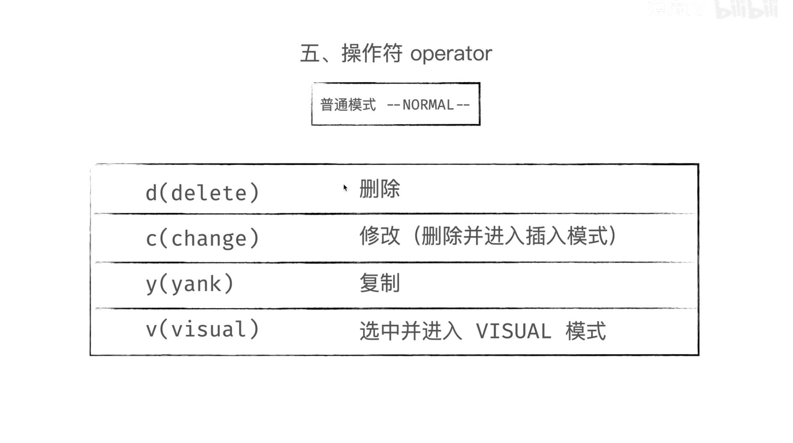

1. vim 模式
normal -> insert
insert -> normal
normal -> visual
visual -> normal
normal <-> command
2. 光标移动
在 normal 模式下：

3. operator

- d: cut
- c: change, i.e. cut and into insert mode
- y: copy
- p: paste
- u: undo
- vwwww: select to next 4 words from here(visual mode is convenient for select)
- vjjjp: select 3 lines form here and cut
- vkd: delect a above line from here
4. motion

- viw: select the inner word
- diw = viwd
- /daw/ciw/caw/dib/di'/diB/di[
- dd: cut the line
- cc: change, i.e. cut the line and into insert mode
- yy: copy the line
- 2dd: cut two lines (this line and next line)
- dfs: cut from here to string ’s'
- d^: cut from here to the first string in the line
- die: cut the entire content
- cit: change the content in the tag (in HTML file, the cursor must in the tag line)
5. change upper and lower
- vjgu=vju: lower to the next line from here (gu/gU is similar with d/c/y)
- vj~: exchange upper and lower of words from here
- vawgu=vawu: lowe the word (g can be ignored in visual mode)
- viwgu = viwu
- guiB: lower the contents in the braces{}
- gu$: lower to the end of line
6. tips
- gd: go to the definition, look the content of the function
- gh: go to the however, look the augments setting of the function
- gt: go to next tab
- gT: go to last tab
- 4gt: go to the next 4 tab
- command 0: cursor move to side column for editor
- space: open the directory; open the file
- l: cursor move to the editor from side column
- command x: cursor move the x-th split screen (x=1,2,3…)
7. easy-motion
<leader> is space:
8. vim-surround
- ysiw' / ysis] / ysipB
9. multi-cursor mode
two methods:
- press
gb: select the first word and into visual mode, pressgbto select next matched word, etc. pressd/c/yto operate, or pressvinto normal mode and then pressiinto insert mode. - get into visual mode first, and choose any item (not must be a word), press
gbto select next matched item, etc.
note that multi insert mode -ESC/jj-> multi normal mode -ESC-> normal mode